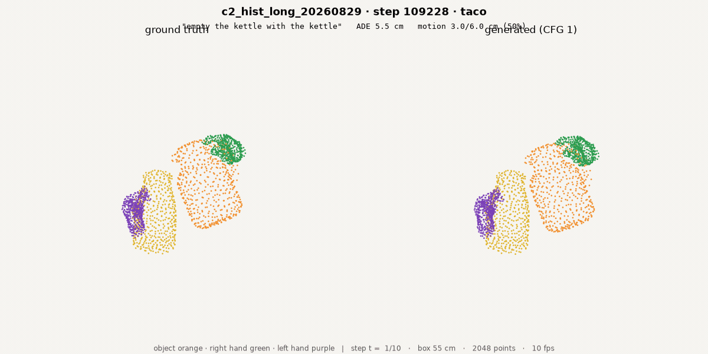
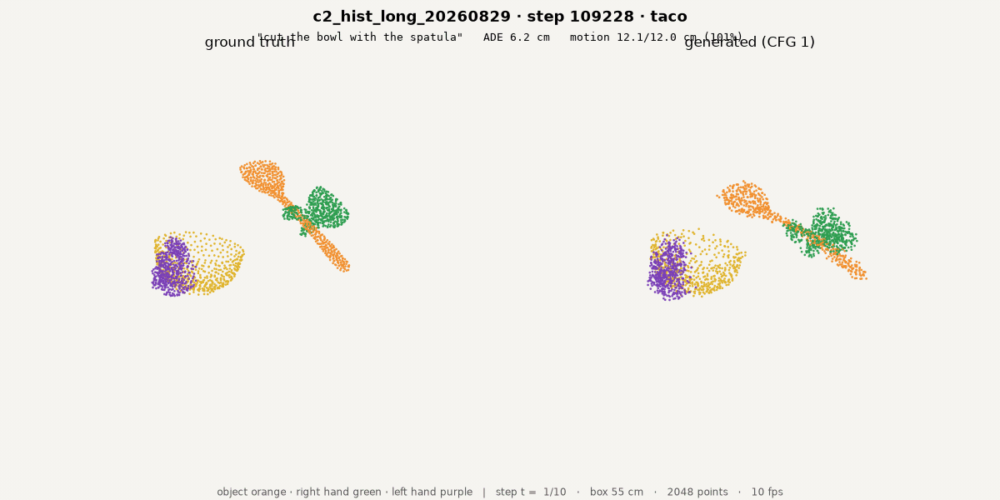
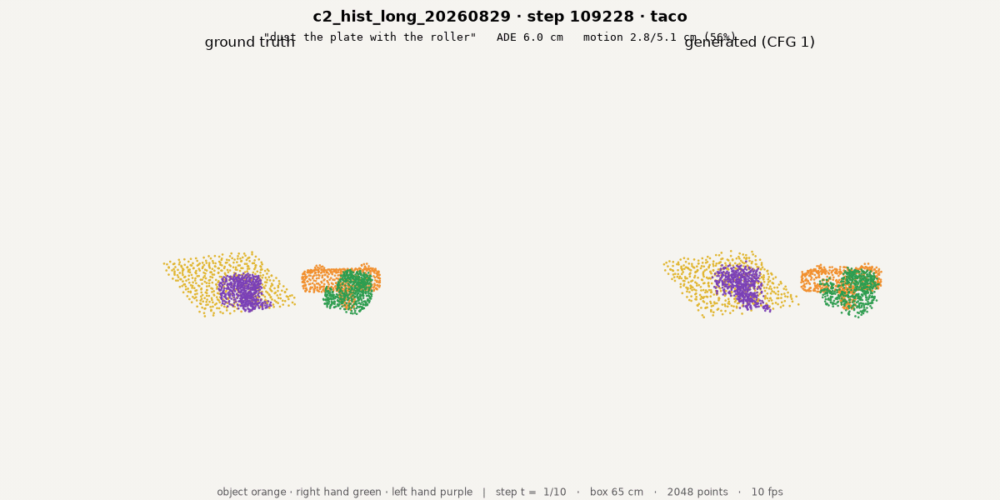
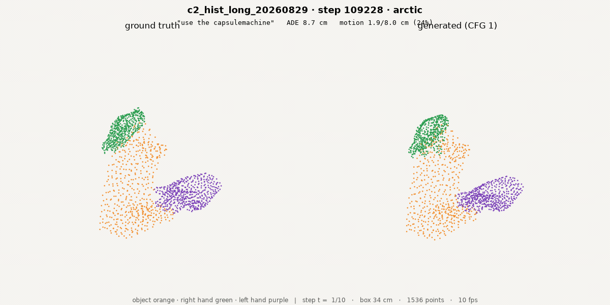
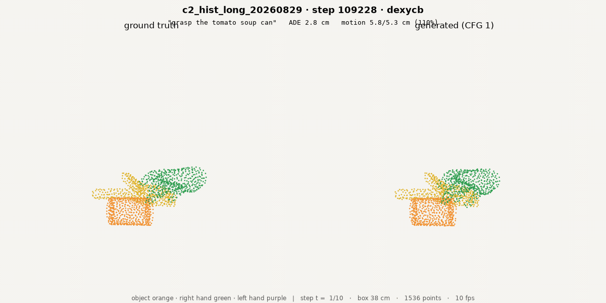
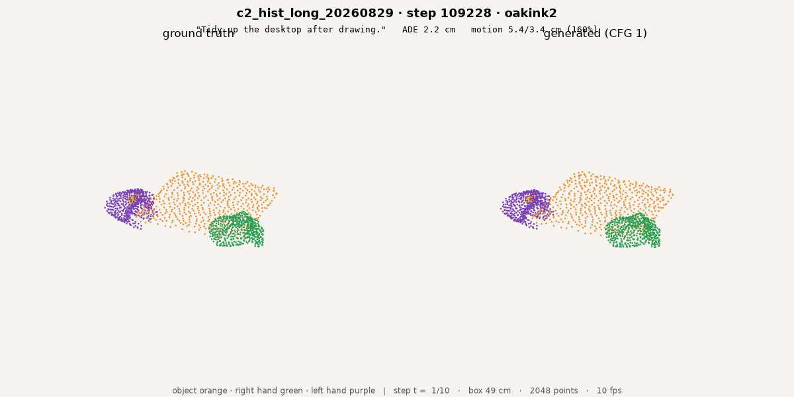
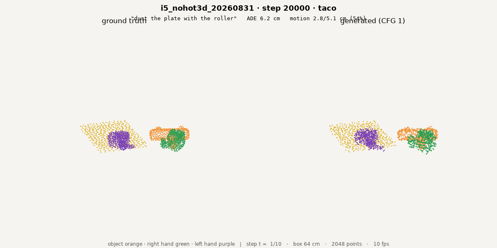
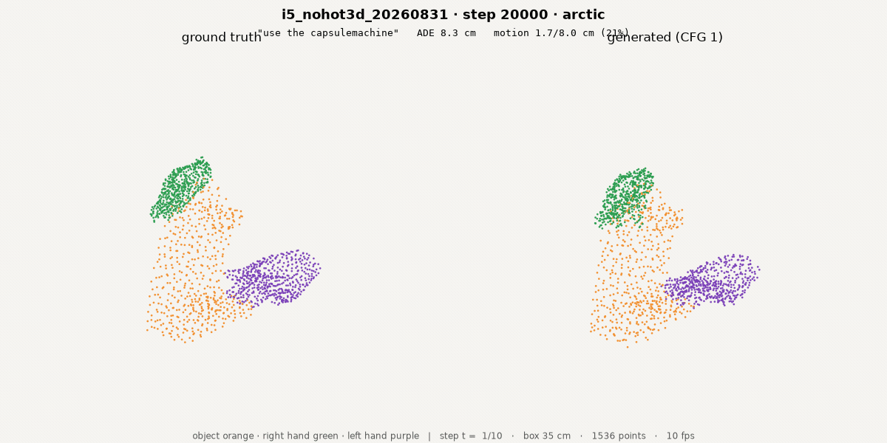
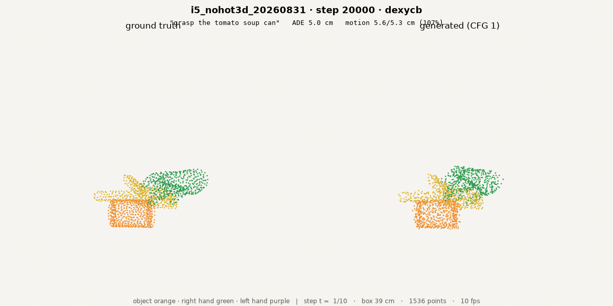
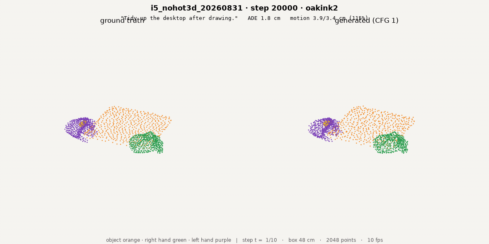

3D-WAM · 2026-08-30 into 08-31 · the scoreboard restated, the architecture settled, and the first cross-embodiment measurement
Lab meeting
2026-08-31
Beomjun Kim
[TL;DR] The val loader never left arctic, so every result this project has reported was measured on 32–48 chunks of one dataset; restated properly the ranking survives but nothing beats a zero predictor, every architecture addition we tried is null or negative, and the only real levers are data composition and training length.
build_loader gates every sampler on split=="train", so val walks the chunk index in file order — the first 400 batches are 100 % arctic.

Val has 41,907 chunks over six datasets; evaluate() saw the first 32, and they are all arctic.
build_loader is gated on split == "train"; val therefore iterates the index in file order, and find_manifests sorts alphabetically.dir_mag_split_c.py --batches 6, saw the first 48 chunks. The first 400 batches are arctic.| dataset | val chunks | share | first seen at batch |
|---|---|---|---|
| arctic | 3,977 | 9.5 % | 0 |
| dexycb | 491 | 1.2 % | 497 |
| grab | 7,033 | 16.8 % | 558 |
| hot3d | 12,326 | 29.4 % | 1,437 |
| oakink2 | 13,582 | 32.4 % | 2,978 |
| taco | 4,498 | 10.7 % | 4,676 |
| C2 @109k | ADE cm | zero | cos | hand |
|---|---|---|---|---|
| old probe, 48 arctic chunks | 13.28 | 13.60 | 0.445 | 0.528 |
| new evaluator, same 48 chunks | 13.28 | 13.60 | 0.445 | 0.528 |
| new evaluator, 576 stratified | 8.43 | 7.97 | 0.248 | 0.337 |
Two architecture components aimed at the interface, three data-composition arms, each with its own control.
(1) the scoreboard, restated · (2) the architecture verdict · (3) data and cross-embodiment
The ranking survives; the absolute numbers roughly halve; nothing beats a zero predictor.
| model | steps | cos (stratified) | cos (as reported) | ADE | zero |
|---|---|---|---|---|---|
| c2_hist_long | 109k | 0.248 | 0.457 | 8.43 | 7.97 |
| c1_history | 100k | 0.182 | 0.370 | 9.09 | 7.97 |
| a0_control | 3.4k | 0.135 | — | 9.11 | 7.57 |
| d6_long | 110k | 0.080 | 0.282 | 10.69 | 7.57 |
| d1_patch | 10k | 0.041 | 0.266 | 10.89 | 7.97 |
| d5_perstep | 10k | −0.002 | 0.066 | 8.27 | 7.57 |
| predictor | ADE cm | cos |
|---|---|---|
| zero | 7.97 | 0.000 |
| linear v·t | 21.06 | 0.205 |
| quadratic | 133.27 | 0.207 |
| C2 @109k | 8.43 | 0.248 |
(1) the scoreboard, restated · (2) the architecture verdict · (3) data and cross-embodiment
Nothing we added survives; the ablation table we had been ranking decisions on was mostly noise.
| new arm | @5k | @10k | @15k | verdict |
|---|---|---|---|---|
| i1 interface tokens | +0.002 | −0.001 | — | null |
| i2 spatial RoPE | +0.001 | −0.008 | −0.009 | negative |
| i3 both | −0.009 | — | — | negative |
| i4 uniform k=4 | −0.007 | — | — | negative |
| old ablation vs its control | Δ cos | 95 % CI |
|---|---|---|
| a2 no time-RoPE | +0.016 | [+0.003, +0.030] |
| a1 per-frame history gain | +0.005 | [+0.002, +0.009] |
| a3 x1 · a5 k=16 · a9 rigid-lo · a7 causal | +0.006 … −0.000 | all span 0 |
| a10 rigidity loss | −0.018 | [−0.022, −0.014] |
(1) the scoreboard, restated · (2) the architecture verdict · (3) data and cross-embodiment
The only real gain is data composition, and it survives its own volume control; the Sharpa hand transfers zero-shot with a real but modest loss.
| manipulation | Δ cos @5k | 95 % CI |
|---|---|---|
| random 32 % of episodes removed (i8) | +0.005 | [+0.000, +0.010] |
| hot3d removed (i5, 31.9 % of chunks) | +0.013 | [+0.009, +0.018] |
| i5 vs i8, paired directly | +0.008 | [+0.002, +0.014] |
| C2, human hands only | cos | hand cos |
|---|---|---|
| human | 0.244 | 0.272 |
| Sharpa, zero-shot | 0.193 | 0.207 |
| paired gap | −0.045 | −0.052 |
| 95 % CI | [−0.077, −0.013] | [−0.091, −0.015] |
| 10 % Sharpa co-training (i9 vs i0, 10k) | Δ cos | 95 % CI |
|---|---|---|
| evaluated on Sharpa, hand | +0.0146 | [+0.0054, +0.0238] |
| evaluated on human, hand | +0.0141 | [+0.0067, +0.0217] |
| at 30,000 steps, paired | Δ cos | 95 % CI |
|---|---|---|
| i9 vs i5, on Sharpa | +0.0135 | [+0.0025, +0.0246] |
| i9 vs i5, on human | −0.0046 | [−0.0124, +0.0034] |
| i5 vs i0, on human | +0.0274 | [+0.0177, +0.0378] |
| i5 vs i0, on Sharpa | +0.0103 | [−0.0005, +0.0217] |
Stop adding architecture. The configuration that works is the plain one; spend the compute on data curation and training length.
val_stratified on for every new run (implemented, default off so runs in flight keep their basis) · owner: me · done ② long run of the recommended recipe to 110k · running ③ Sharpa co-training at 10 % vs zero-shot · running ④ owner to verify the paired rollout clips.







DATA 10 Hz / N=1024 stored / 512 per entity / T=10 · 894,656 chunks after the motion filter
interface = 2.7 % of points within 1 cm of another entity; 67.9 % of chunks contain such a pair
contact density: taco 4.64 % · arctic 4.34 % · dexycb 4.29 % · oakink2 3.70 % · grab 2.69 % · hot3d 1.23 %
the preprocessor's contact flags and the stored tracks AGREE everywhere — hot3d is not a bug
EVAL review/train/ieval.py --per-dataset 96 --embodiment human (stratified, P-bucketed, ratio of aggregates)
review/train/ipaired.py --ref <arm> --metric cos|cos_near_hand (paired bootstrap, 10,000 resamples)
review/train/xeval.py --pairs 384 (matched human/Sharpa chunk pairs on TACO)
validated: ieval --legacy-first 48 reproduces dir_mag_split_c.py --batches 6 digit-for-digit
FIXES wam/train/loaders.py DataConfig.val_stratified (default false; new configs should set it)
wam/train/vmetrics.py cosine + INTERFACE group reported inline at every eval
scripts/viz_vdit_c.py str(Path + str) precedence bug — the renderer had been failing for every k
CORRECTIONS a4_patch4's −0.035 was 2,339 of 3,400 steps: confounded, retracted as evidence about k=4
a1_histframe called null, is real at +0.005 — real and negligible are different claims
"quadratic extrapolation beats C2" held on arctic-48 only; stratified, C2 wins on direction
"has_robot=False is a one-line bug": WRONG — the robot columns in *_loaded are empty for every
dataset; the Sharpa retarget exists only in TACO's hf_release. Change reverted.
CUT i6 (spatial RoPE without time RoPE, stopped at 9,680 steps, not resolved: CI [−0.005,+0.026])
i7 dose-response (+0.005, CI spans 0) · per-dataset proportional pooling · contact-weighted sampling